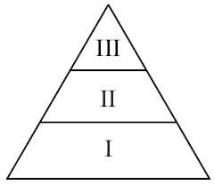
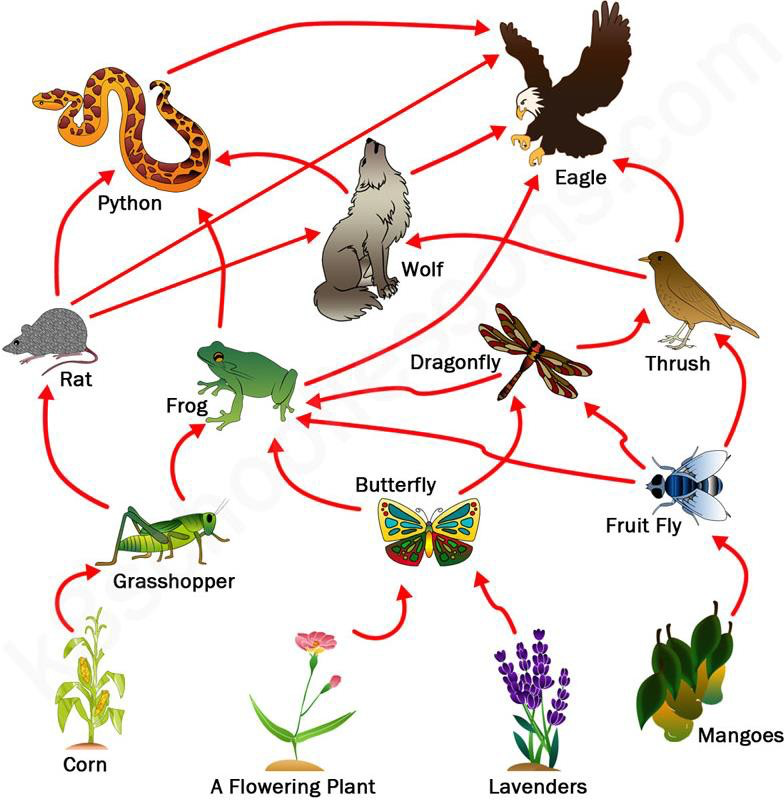

Revision questions on ecosystems: food chains and webs, energy flow, and the carbon and nitrogen cycles. (Ecosystems is no longer a separate topic in the course, but these questions appear in older exams.) Each part is worth 1 mark as a guide.
Section A: Multiple choice
Organisms that break down dead or decaying matter are called:
In the food chain clover → caterpillar → lizard → kookaburra, which statement is incorrect?
The kookaburra is the third-order (tertiary) consumer.
Which is the word equation for photosynthesis?
Which correctly lists the ecological terms from least complex to most complex?
Which of the following would not be classified as a consumer?

In this energy pyramid, level I contains autotrophs. In which level(s) would omnivores be found?
Which statement about food chains is incorrect?
Respiration and photosynthesis are involved in cycling an important molecule in ecosystems. Which cycle is this?
Bacteria that can convert atmospheric nitrogen into ammonia are called:
Section B: Short answer
What are the seven characteristics of living things?
Movement, respiration, sensitivity, growth, reproduction, excretion and nutrition (MRS GREN).
Question 2

Give an example from the food web of each: (i) a producer; (ii) a second-order consumer; (iii) a carnivore; (iv) an organism that respires; (v) an organism in the third trophic level; (vi) a third-order consumer.
(i) Producer: corn, a flowering plant, lavenders or mangoes.
(ii) Second-order consumer: thrush, dragonfly, frog or rat.
(iii) Carnivore: wolf, python or eagle.
(iv) Respires: all of them.
(v) Third trophic level: thrush, dragonfly, frog or rat.
(vi) Third-order consumer: thrush, wolf, eagle or python.
Give two food chains from the food web, each with at least 4 organisms.
For example: corn → grasshopper → frog → python → eagle; lavenders → butterfly → dragonfly → thrush → eagle.
Only about 10% of energy is passed on to the next trophic level. What happens to the other 90%?
It is lost as heat (a by-product of respiration), in waste such as faeces, and in organisms that die without being eaten.
Draw (on paper) a simplified carbon cycle. Describe it, then compare.
CO2 in the atmosphere → plants (photosynthesis); plants → animals (eating); plants and animals → CO2 (respiration); dead plants and animals → decomposers (decomposition, releasing CO2); dead matter → fossil fuels (fossilisation); fossil fuels → CO2 (combustion).
Question 4
Plants carry out both photosynthesis and respiration.
Write the balanced chemical equation for photosynthesis.
6CO2 + 6H2O → C6H12O6 + 6O2 (with light and chlorophyll)
Write the balanced chemical equation for aerobic respiration.
C6H12O6 + 6O2 → 6CO2 + 6H2O (+ energy)
Explain the relationship between photosynthesis and respiration.
The reactants of one process are the products of the other, so the substances (CO2, water, glucose and oxygen) cycle between the two processes.